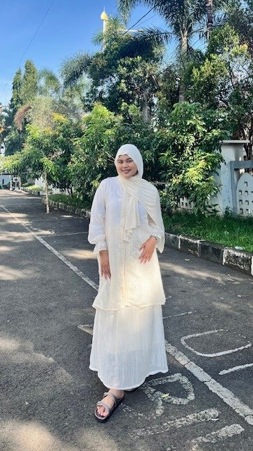
HalloSaya
Sarah Imelda
Saya merupakan lulusan S1 Manajemen dari Universitas Nasional Pasim Bandung dengan IPK 3,38 dan memiliki pengalaman magang di BPSDM PROVINSI JAWA BARAT dalam mendukung pelaksanaan pelatihan dan pengembangan kompetensi Aparatur Sipil Negara (ASN). Saya memiliki pengalaman berorganisasi dan kepemimpinan yang membantu saya mengembangkan kemampuan komunikasi, koordinasi, kerjasama tim, serta manajemen waktu. Saya juga memiliki ketertarikan pada bidang marketing, khususnya strategi pemasaran, pengembangan bisnis, analisis perilaku konsumen, bidang human resources dan administrasi operasional. Saya terbiasa bekerja secara terstruktur, teliti, disiplin, bertanggung jawab dan memiliki kemauan untuk terus mempelajari hal baru.
PendidikanSaya
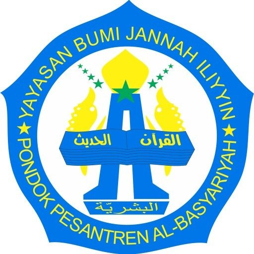
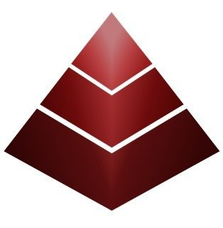
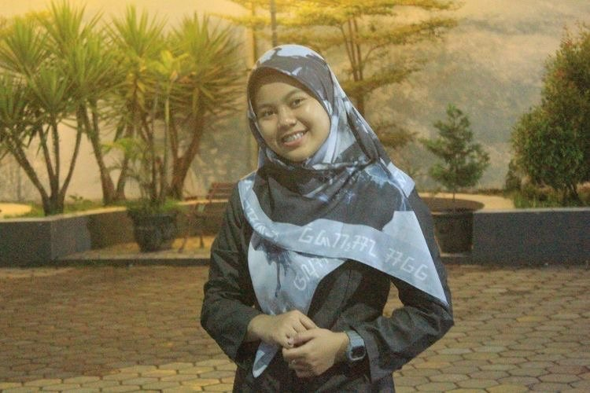
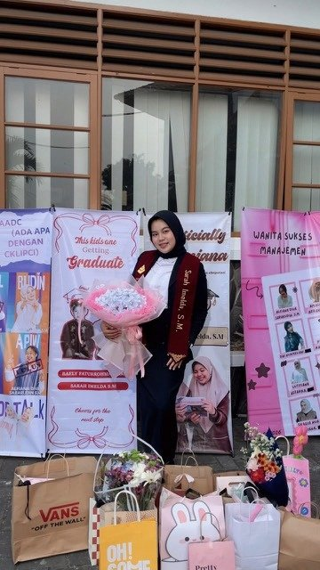
MA Al-Basyariyah
Jurusan Ilmu Pengetahuan Sosial
Lulusan 2015-2022
Universitas Nasional Pasim Bandung
Jurusan Program Studi Manajemen
Lulusan 2022-2026
KeterampilanSaya
Keterampilan Personal
- Communication
- Leadership & Teamwork
- Creative Thinking
- Attention to Detail
- Time Management
- Adaptability & Willings to Learn
Keterampilan Teknis
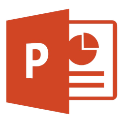
KeahlianSaya
Keahlian Bidang
- Digital Marketing
- Sosial Media Management
- Market Research
- Marketing Strategy
- E-Commerce
- Data Entry & Data Management
- Training Administration
Kemampuan Bahasa
Pengalaman KerjaSaya
Staf Pengembangan Kompetensi Teknis Inti (Magang)
BPSDM PROVINSI JAWA BARAT
JULI - SEPTEMBER 2025
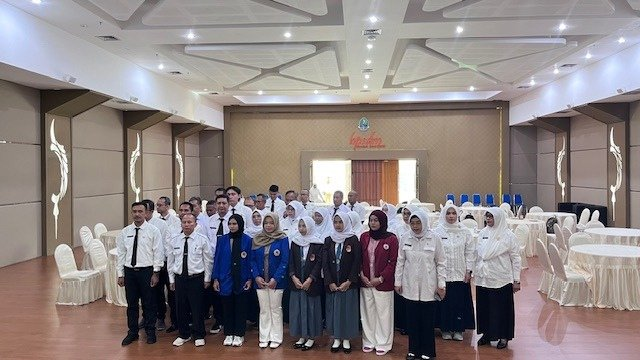
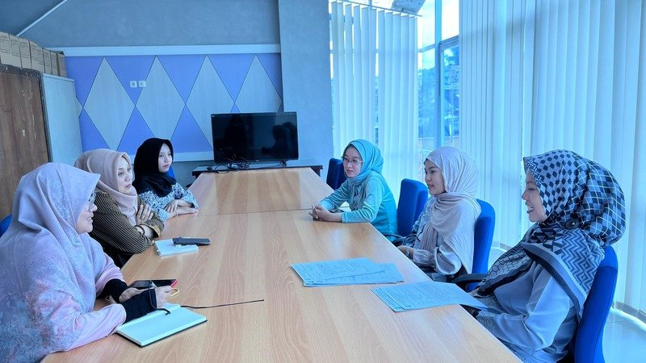
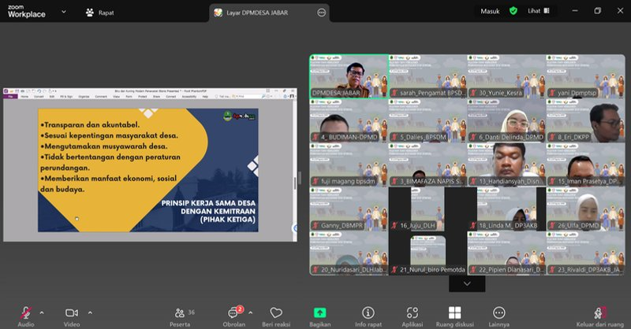
Pengalaman OrganisasiSaya
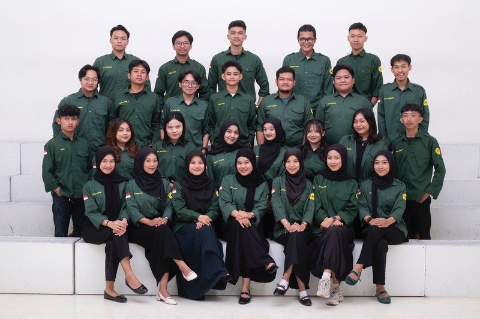
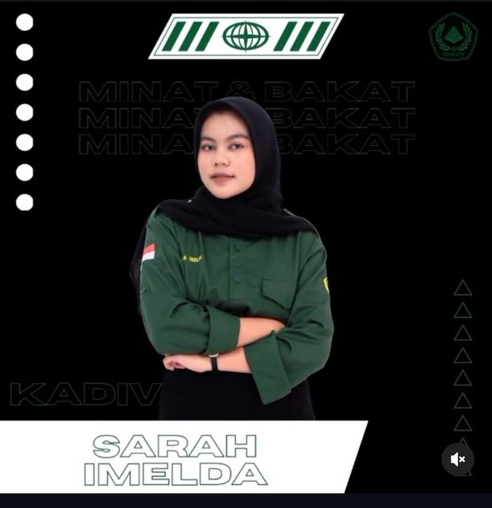
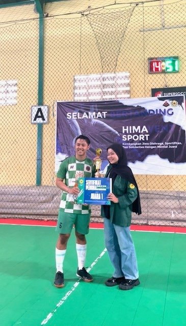
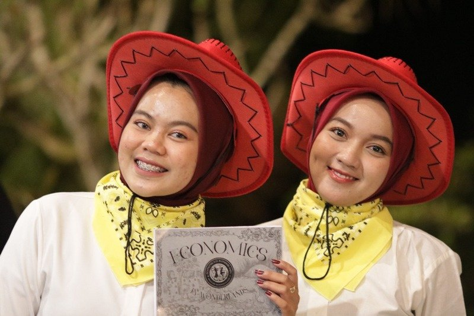
Proyek
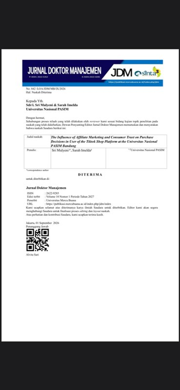
Publikasi Jurnal
Influence of Affiliate Marketing and Consumer Trust on Purchase Decisions in Users of the TikTok Shop Platform at the National University of Pasim Bandung
Merancang metodologi penelitian riset kuantitatif, mengumpulkan data primer mahasiswa, dan melakukan data analisis statistik. Bertanggung jawab penuh menyusun manuskrip ilmiah dalam bahasa inggris.
Pencapaian:
Berhasil mempublikasikan artikel terakreditasi sinta 3 pada jurnal Doktor Manajemen (Vol. 10 Nomor 1 Periode Tahun 2027).
Pelatihan 1
MarkPlus Institute 2025
Mengikuti pelatihan Entrepreneurial Marketing untuk meningkatkan pemahaman mengenai strategi pemasaran yang berorientasi pada peluang bisnis, inovasi, dan kebutuhan pelanggan. Pelatihan ini mendukung pengembangan kemampuan dalam memahami pasar, mengidentifikasi peluang usaha, serta menyusun strategi pemasaran yang efektif dan berorientasi pada pertumbuhan bisnis.
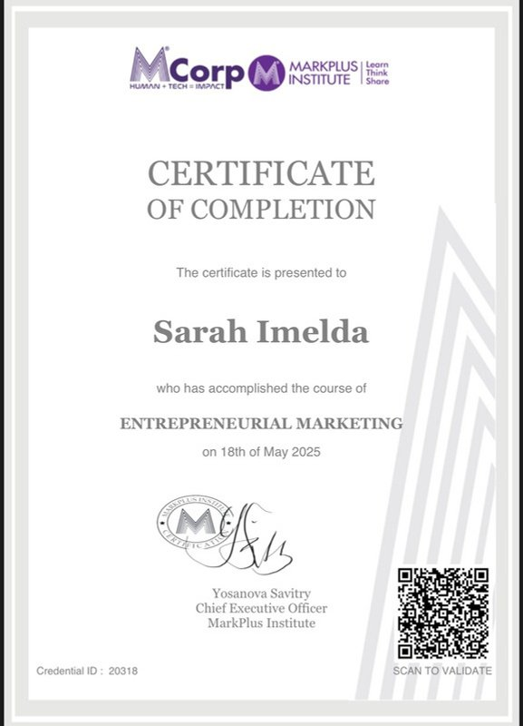
Pelatihan 2
E-Marketing Institute 2026
Menyelesaikan pelatihan dan ujian online Search Engine Optimization (SEO) untuk memahami teknis optimisasi website agar lebih mudah ditemukan di mesin pencari. Mencakup pemahaman dasar mengenai penggunaan kata kunci, optimasi konten, serta strategi SEO untuk meningkatkan visibilitas website dan menarik trafik organik sebagai bagian dari pemasaran digital.
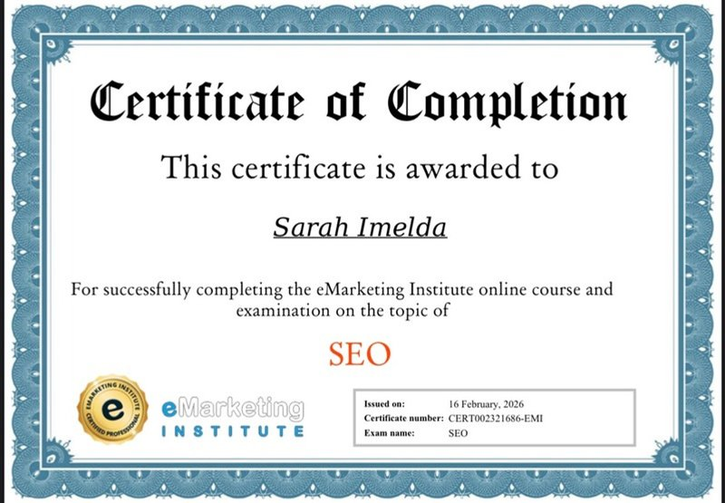
Sertifikat
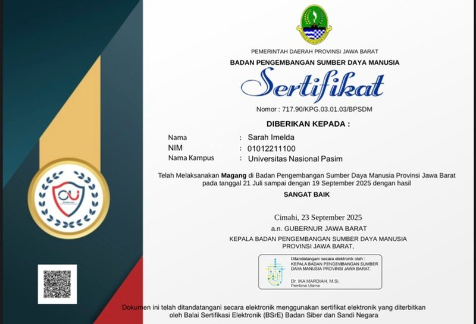
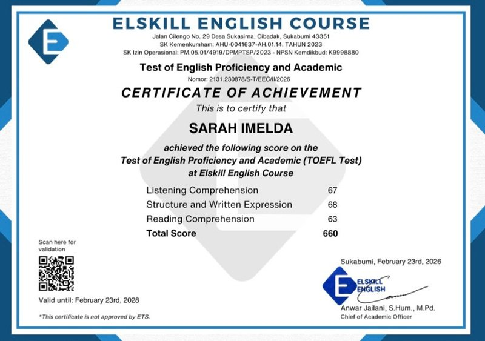